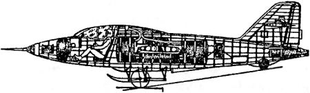
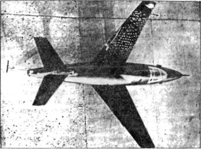

Летающая лаборатория «Ц-1» («ЛЛ-1»)
И после окончания войны конструкторская мысль неоднократно возвращалась к идее ракетных самолетов. Во второй половине 1945 года коллектив, возглавляемый автором известных десантных планеров Павлом Владимировичем Цыбиным, начал проектирование специального самолета, предназначенного для практических экспериментов, связанных с проблемой выбора оптимальной формы крыла при полете на околозвуковых скоростях. Проектирование и постройка велись с учетом программы будущих исследований, разработанной учеными ЦАГИ с участием видных специалистов авиапромышленности.
В начале 1947 года летающая лаборатория, получившая обозначение «Ц-1» («Цыбин-одноместный»), была передана на испытания.
Конструкция экспериментального «Ц-1» была цельнодеревянной, обшивка — фанерная, фюзеляж — фанерный монокок, крыло — прямое, плоское, с двумя лонжеронами из дельта-древесины, оперение — обычное, крестообразное по виду спереди, с весовой компенсацией рулевых поверхностей. Перед полетом в емкости аппарата, как на планере, заливалось до тонны воды. Вместо обычного шасси применили двухколесную ось-тележку и подфюзеляжную лыжу.

В качестве силовой установки для «Ц-1» избрали твердотопливный ракетный двигатель «ПРД-1500» тягой 1500 килограммов, созданный конструкторским коллективом инженера Ивана Картукова. По габаритам, весу и, главным образом, по большому значению развиваемой тяги и приемистости он наилучшим образом отвечал кратковременным расчетным режимам программы исследовательских и экспериментальных полетов. Двигатель устанавливался в хвостовой части самолета под оперением. Время его работы — 8-10 секунд. Это обеспечивало горизонтальный полет со скоростью до 900 км/ч.
Взлет и набор высоты «Ц-1» производил на буксире самолета «Ту-2». Сразу после отрыва от земли ось-тележка с колесами сбрасывались. На высоте 5–7 километров производилась отцепка буксирного троса и летчик-испытатель переводил «Ц-1» в режим пикирования под углом 45–60°. На участке установившегося прямолинейного пикирования он включал ракетный двигатель. В таком режиме скорость «Ц-1» достигала 1000–1050 км/ч (примерно 0,9 Маха).
За недолгие секунды крутого пикирования бортовая аппаратура фиксировала параметры натекающего воздушного потока, производилось фотографирование спектров обтекания, решались другие задачи полета. Крыло крепилось в фюзеляже на динамометрической подвеске (на четырех динамографах), позволяющей определять местные скорости в полете, распределение давления по крылу и оперению при подходе к критическим значениям числа Маха.
Затем тонна «балластной» воды сливалась из цистерн в атмосферу. Вдвое облегченный «Ц-1», как обычный планер, маневрировал и производил посадку на подфюзеляжную лыжу.
При стартовом весе в 2039 килограммов скорость отрыва «Ц-1» от взлетно-посадочной полосы была в пределах 150–160 км/ч, а после слива воды при весе около 1100 килограммов посадочная скорость не превышала 120 км/ч.
Первым «Ц-1» поднял в воздух летчик-испытатель Иванов. Последующие полеты на экспериментальной машине выполняли летчики Ахмет-Хан Султан, Анохин, Рыбко и другие. На «Ц-1» (его называли также «ЛЛ-1», «Летающая лаборатория-1» или «Экспериментальный планер № 1») было сделано более 30 полетов. На этом закончился первый этап исследовательских работ. Следующие по программе предусматривали изменение несущего комплекса аппарата.
Еще в 1946 году для второго фюзеляжа «Ц-1» с вертикальным оперением конструкторская бригада, руководимая инженером Бересневым, спроектировала два металлических крыла такой же площади и удлинения, как деревянное. Одно крыло имело прямую, а другое — обратную стреловидность по передней кромке с одинаковыми углами +30°. Было спроектировано и новое горизонтальное оперение прямой стреловидности с углом 40°. Стреловидные крылья, изготовленные из дюралюминия, установили на «Ц-1», который получил соответственно новые обозначения: «ЛЛ-2» (с крылом прямой стреловидности) и «ЛЛ-3» (с крылом обратной стреловидности). Консоли новых крыльев имели унифицированную заделку, то есть крепились в тех же узлах, что и прямые деревянные консоли «ЛЛ-1». Поэтому изменения центровки аппарата при перестановке крыльев были компенсированы весовой балансировкой воды в носовой и хвостовой емкостях фюзеляжа. Расчеты оптимальной заправки цистерн дали приемлемые запасы устойчивости для обоих вариантов крыла.

В полетах на «ЛЛ-3» (а их выполнили около 100) были достигнуты несколько большие скорости пикирования, чем на «ЛЛ-1» с прямым крылом, соответствующие числам Маха = 0,95-0,97. В результате удалось подробно изучить свойства малоизвестных крыльев обратной стреловидности и в целом самолета с ними.
Вариант под названием «ЛЛ-2» решили в воздухе не испытывать, так как в 1948 году стреловидные крылья с углом 35° были всесторонне проверены на самолетах-истребителях «МиГ-15» и «Ла-15». К тому же деревянная конструкция первого корпуса «Ц-1» за время эксплуатации успела поизноситься и уже не гарантировала безопасности полета.
Исследовательские полеты ракетоплана «Ц-1» в вариантах «ЛЛ-1» и «ЛЛ-3» дали ученым уникальные материалы по аэродинамическим характеристикам самолетов с разными крыльями, распределению давления потока по хорде и размаху, возникновению и перемещению ударных волн (скачков уплотнения) и срывных зон потока за ними на критических значениях чисел Маха, особенностям и изменениям параметров пограничного слоя и так далее.
Главной целью группы Цыбина при испытаниях было разобраться с возможными проблемами на пути создания скоростных самолетов и отработать аэродинамическую компоновку легкого реактивного истребителя. Однако реализовать этот замысел им в полной мере не удалось. В 1947 году началась первая в истории СССР «конверсия» оборонной промышленности. КБ Цыбина закрыли, а завод перевели на выпуск гражданской продукции.